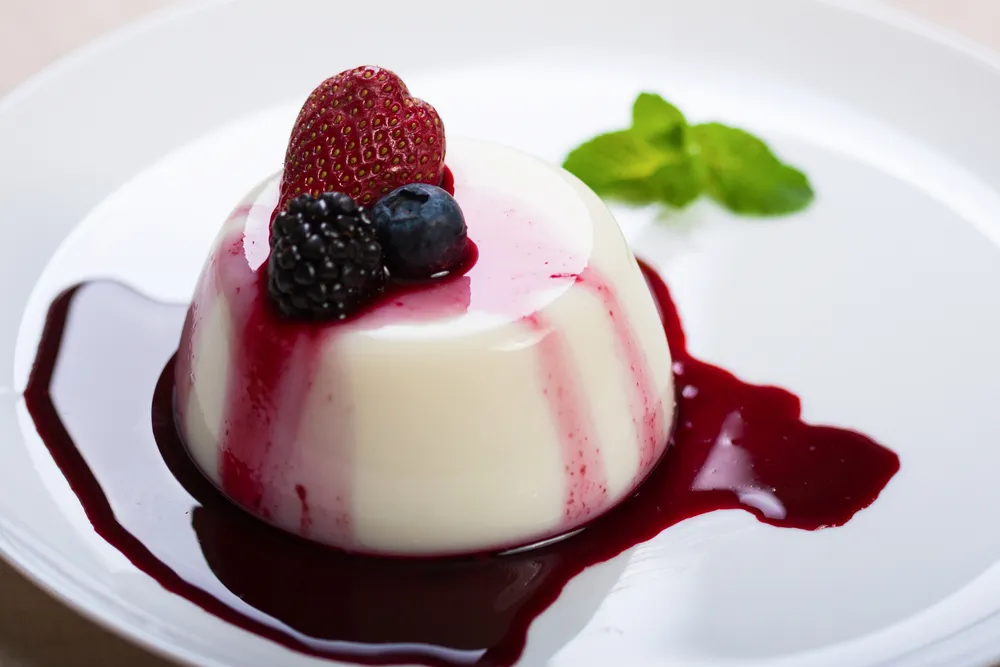

Panna Cotta

A traditional, easy, and delicious Italian custard. It tastes just like
the panna cotta served at Italian
restaurants. Serve with warm hot fudge sauce and fresh raspberries on
top. This keeps well for several days
in the refrigerator.
Ingredients
- ⅓ cup skim milk
- 1 (.25 ounce) envelope unflavored gelatin
- 2 ½ cups heavy cream
- ½ cup white sugar
- 1 ½ teaspoons vanilla extract
Directions
-
Pour milk into a small bowl, and stir in the gelatin powder. Set aside.
-
In a saucepan, stir together the heavy cream and sugar, and set over
medium heat. Bring to a full boil, watching
carefully, as the cream will quickly rise to the top of the pan. Pour
the gelatin and milk into the cream, stirring until
completely dissolved. Cook for one minute, stirring constantly. Remove
from heat, stir in the vanilla and pour
into six individual ramekin dishes.
-
Cool the ramekins uncovered at room temperature. When cool, cover with
plastic
wrap, and refrigerate for at least 4 hours, but preferably overnight
before serving.